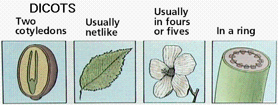
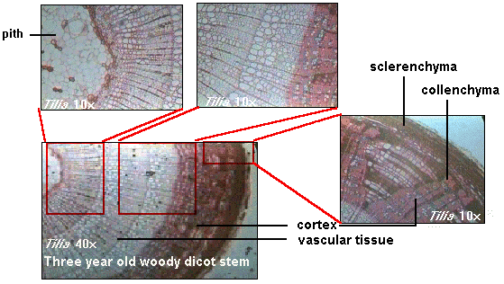

Monocots and Dicots | Secondary Growth | The leaf | Links
Angiosperms, flowering plants, are divided into two groups: monocots and dicots.

Features of monocot and dicot plants. Images from Purves et al., Life: The Science of Biology, 4th Edition, by Sinauer Associates (www.sinauer.com) and WH Freeman (www.whfreeman.com), used with permission.
Monocot seeds have one "seed leaf" termed a cotyledon (in fact monocot is a shortening of monocotyledon). Dicots have two cotyledons. Both groups, however, have the same basic architecture of nodes, internodes, etc.
Comparison of monocot (left, oat) and dicot (right, bean) gross anatomy. Image from Purves et al., Life: The Science of Biology, 4th Edition, by Sinauer Associates (www.sinauer.com) and WH Freeman (www.whfreeman.com), used with permission.
The above images is from gopher://wiscinfo.wisc.edu:2070/I9/.image/.bot/.130/Stem/Zea_cross_section/Stem_composite. Note the scattered vascular bundles of the corn stem.
The above image is from gopher://wiscinfo.wisc.edu:2070/I9/.image/.bot/.130/Stem/Medicago_cross_section/Labeled. Note the ringed array of vascular bundles in this dicot stem (Medicago).
Monocot stems have scattered vascular bundles. Dicot stems have their vascular bundles in a ring arrangement. Monocot stems have most of their vascular bundles near the outside edge of the stem. The bundles are surrounded by large parenchyma in the cortex region. There is no pith region in monocots. Dicot stems have bundles in a ring surrounding parenchyma cells in a pith region. Between the bundles and the epidermis are smaller (as compared to the pith) parenchyma cells making up the cortex region. Click here to view a large image of plant stem and root structure (image is from gopher://wiscinfo.wisc.edu:2070/I9/.image/.bot/.130/Intr._Plant_Body_Spring_/Primary_130_Lab_Images/Bean_whole_anatomy).
Monocot roots, interestingly, have their vascular bundles arranged in a ring. Dicot roots have their xylem in the center of the root and phloem outside the xylem. A carrot is an example of a dicot root.
Diagram illustrating the tissue layers and their organization within monocot and dicot roots. Image from Purves et al., Life: The Science of Biology, 4th Edition, by Sinauer Associates (www.sinauer.com) and WH Freeman (www.whfreeman.com), used with permission.
Cross-section of a root of corn. Note the ringed array of vascular bundles in this Zea (monocot) root cross section. The above image is cropped and reduced from gopher://wiscinfo.wisc.edu:2070/I9/.image/.bot/.130/Root/Monocot_Roots/Zea_Monocot_Root/Zea_xs.
Cross-section of a dicot root. Note the X-shaped xylem (in the lower left corner of the picture) of the root of Ranunculus (dicot). The above image (left) is cropped from gopher://wiscinfo.wisc.edu:2070/I9/.image/.bot/.130/Root/Ranunculus_root_cross_sections/Mature/Whole_cross_section.. The above image (right [lower if your browser window is narrow]) is cropped from gopher://wiscinfo.wisc.edu:2070/I9/.image/.bot/.130/Root/Ranunculus_root_cross_sections/Mature/Vascular_bundle.
Monocot leaves have their leaf veins arranged parallel to each other and the long axis of the leaf (parallel vennation). An common example of this is the husk of corn or a blade of grass (both are monocots). Dicot leaves have an anastamosing network of veins arising from a mid-vein termed net vennation. Examples of dicot leaves include maples, oaks, geraniums, and dandelions.
Monocots have their flower parts in threes or multiples of three; example the tulip and lily (Lilium ). Dicots have their flower parts in fours (or multiples) or fives (or multiples). Examples of some common dicot flowers include the geranium, snapdragon, and citrus.
Monocot (left) and dicot (right) flowers. Note the typical monocot arrangement of flower parts in 3's or multiples of 3. Lilium flower. Note the dicot florap part array of flower parts in four or multiples of four on this flower of Sanguinaria canadensis. The above image (left) is cropped from gopher://wiscinfo.wisc.edu:2070/I9/.image/.bot/.130/Angiosperm/Lilium/Flower_dissection/Flowers. The above image (right, or lower if your browser window is small) is cropped from gopher://wiscinfo.wisc.edu:2070/I9/.image/.bot/.130/Angiosperm/Various_flowers/Dicots/Popavaraceae/Sanguinaria_canadensis_KS.
Secondary growth is produced by a cambium. It occurs in rows or ranks of cork, secondary xylem or secondary phloem cells. Cork cells (produced by a cork cambium) are technically part of the epidermis, and contribute to the bark of woody stems.
Dicot secondary growth occurs by growth of vascular cambium, to complete a full vascular cylinder around the plant. Secondary xylem is produced to the inside of the vascular cambium, secondary phloem to the outside. The living parts of the woody plant are next to the vascular cambium.
Cross-section of a young stem of basswood. Note the primary growth in cross section of a young Tilia (basswood) stem. The above image is cropped from gopher://wiscinfo.wisc.edu:2070/I9/.image/.bot/.130/Woody_Stems/Tilia_Stem_-_cross_sections/Primary_Growth/Whole_Cross_Section.
Three cross-sections of older basswood twigs. Note the annual growth rings and the complete vascular cylinder producing secondary xylem to the inside and secondary phloem to the outside. The above image is from gopher://wiscinfo.wisc.edu:2070/I9/.image/.bot/.130/Woody_Stems/Tilia_Stem_-_cross_sections/Secondary_Growth/1%2C_2%2C_and_3-year_old_stems.
At the end of each growing season, the vascular cambium stops growing, forming a growth ring.
Closeup of a cross-section of basswood growth ring. Note the growth ring, which is formed by very small cells followed by large cells with the commencement of growth in the next growing season. The above image is cropped from gopher://wiscinfo.wisc.edu:2070/I9/.image/.bot/.130/Woody_Stems/Tilia_Stem_-_cross_sections/Secondary_Growth/Secondary_Xylem_-_growth_ring.
Balsa Wood (cross section) Showing Large Conductive Elements (SEM x220). This image is copyright Dennis Kunkel at www.DennisKunkel.com, used with permission.

Details of the stem of basswood. The above image is from http://www.mancol.edu/science/biology/plants_new/anatomy/grndd.html.
Monocots usually don't have secondary growth. Some, such as bamboo and palm trees, have secondary growth. Monocot secondary growth differs from dicot secondary growth in that new bundles are formed at the edge of the stem. These new bundles are close together, providing support for the stem.
The leaf consists of the (generally) flat blade, one or more leaf veins, a petiole, and usually an axillary bud. The petiole can be long (as in celery and bok-choy) or short (as in cabbage and lettuce). Leaves may be simple or compound: simple leaves have a single subdivision or leaflet, compound leaves have more than one leaflet. Leaves attach to stems at nodes (internodes are the spaces between nodes). Leaf phyllotaxy is the pattern exhibited (spiral, opposite, alternate, whorled) of leaf attachment to a stem.
Back to Table of Contents | FLOWERING PLANT REPRODUCTION
Email: mj.farabee@emcmail.maricopa.edu
Last modified: 6/6/07